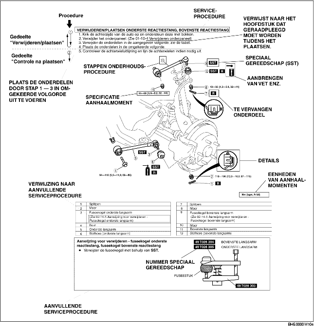

• Dit werkplaatshandboek bevat de procedures voor het uitvoeren van al het benodigde onderhoud. De procedures kunnen worden uitgesplitst in 5 basishandelingen:
• Eenvoudige werkzaamheden die gemakkelijk kunnen worden uitgevoerd door naar de auto te kijken (bijv. het verwijderen/plaatsen van onderdelen, het opkrikken van de auto, het reinigen van onderdelen en het visueel inspecteren), worden in dit werkplaatshandboek niet behandeld.
1. Aan het begin van de meeste reparatieprocedures wordt een overzichtsafbeelding gegeven. Daarin kunnen de onderdelen geïdentificeerd worden, wordt aangegeven hoe de delen in elkaar passen en worden visuele controles aangegeven. Alleen die procedures voor het verwijderen/plaatsen die in een bepaalde volgorde moeten worden uitgevoerd, worden beschreven.
2. Te vervangen onderdelen, aanhaalmomenten en symbolen voor olie, vet en siliconenpakking worden in de overzichtsafbeelding aangegeven. Daarnaast wordt aangegeven in welke gevallen gebruik moet worden gemaakt van speciaal gereedschap.
3. De stappen in de procedures zijn genummerd en het onderdeel waar het in de procedure om gaat is in de afbeelding aangegeven met hetzelfde nummer. Soms moet er bij een bepaalde procedure op een aantal belangrijke zaken worden gelet. Raadpleeg dan de informatie waarnaar verwezen wordt.

• Er worden 8 symbolen gebruikt waarmee smeermiddelen, siliconenpakking en het gebruik van SST wordt aangegeven. Deze symbolen geven de punten aan waar het desbetreffende smeermiddel of de siliconenpakking moet worden aangebracht of wanneer het speciaal gereedschap moet worden gebruikt.
• In dit handboek zult u waarschuwingen, opmerkingen, aanwijzingen, specificaties en onder- en bovengrenzen tegenkomen.